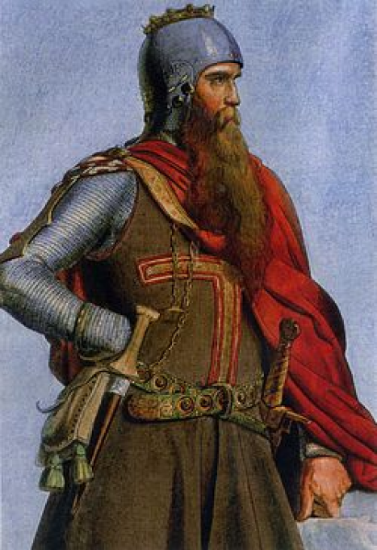

Третий Крестовый
Поход
«Обретите же, сыны, дух мужества; возьмите щит веры и шлем спасения и,
укреплённые не столько числом и силой, а скорее духом Господа нашего,
которому нетрудно спасать нас и в большом и в малом, помогите по мере
сил ваших тому, кто дал вам жизнь и пропитание...»
В 1173 году на территории Египта образовалось новое государство
во главе с Саладином.
Начав войну против Иерсуалимского королевства,
он разбил войско крестоносцев и взял в осаду Иерусалим.
Столица Иерусалимского королевства капитулировала. После этого Иерсуалимское королевство закончило
своё существование.
В 1189 году начался Третий Крестовый поход.
Его главной целью было повторное отвоевывание Святой земли
Главные командующие похода
|
Англия Ричард I Львиное Сердце |
Германия Фридрих I Барбаросса |
|
Франция Филипп II Август |
Австрия Леопольд V Бабенберг |
Во время переправы через речку Селиф в Малой Азии,
Фридрих Барбаросса,
облаченный в тяжелые доспехи, упал с коня и утонул.
После этого
большая часть немецких крестоносцев повернула домой
Рыцари добрались до территории, где еще недавно
было Иерусалимское королевство, но не пошли сразу
освобождать
Иерусалим, а решили осадить крепость Акру.
Осада
продолжалась
два года. Филипп II Август не дождался
окончания осады и отбыл домой
со
своими рыцарями
Когда город пал 12 июля, Ричард I приказал
снять вывешенный на
крепостных стенах австрийский флаг.
Оскорбленный за немецкое рыцарство, на плечи которого легли
основные трудности почти двухлетней
осады,
Леопольд Бабенберг, взявший на себя
командование немецкой армией, с
войском вернулся на родину.
Несмотря на то, что английский король взял Акру и одержал
победу над
войсками Саладина в битве при
Арсуфе,
дело закончилось мирными переговорами.
Ричарду нужно было срочно вернуться домой, так как
Французский король
Филипп воспользовался отсутствием
английского короля и захватил почти все владения Англии на материке.